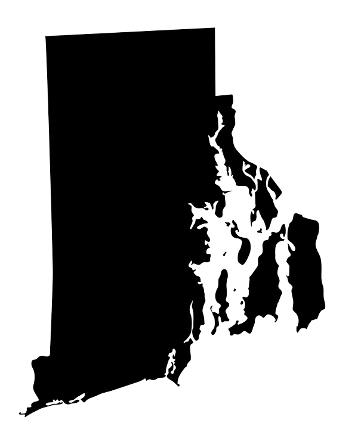

Providence
Federal Hill
The city’s Italian neighborhood, a few minutes from downtown. Atwells Avenue is the place for a long lunch or a late supper the night before.

Semi-Formal: knee-length, midi-length, or slip dresses for women, and tailored suits or blazers with dress pants for men. Colors should match the season avoiding jeans, sneakers, or overly casual wear.
More details to follow.
5:00 – 10:00


Rhode Island T.F. Green International Airport (PVD) is about fifteen minutes away. Amtrak arrives at Providence Station; from there it is a brief ride to the park.
Parking is private for the venue. You will need to show an invitation or be on the guest list to be allowed in.
We have a room block at the Crowne Plaza Warwick, a short drive from the park. Book through the group link to receive the wedding rate.
Airbnbs and other hotels are also very close to the venue.
Map © OpenStreetMap
If you have an extra day, Rhode Island is small enough to wander. Beaches, villages, and a few places worth the drive sit all around the wedding.
Providence
The city’s Italian neighborhood, a few minutes from downtown. Atwells Avenue is the place for a long lunch or a late supper the night before.
Warwick
A shoreline park with a carousel, woods, and a beach on Greenwich Bay — an easy afternoon from the hotel.
Cranston
A little waterfront village on the Cranston–Warwick line. Walk the shops, sit by the river, and have a meal without heading into the city.
Newport
The classic ocean walk along the back of the mansions. Give it a couple of hours; downtown Newport is right there when you finish.
Narragansett
The pier, the stone Towers, and a wide town beach. A classic South County day, about forty minutes from Providence.
North Kingstown
A harbor village of galleries, shops, and a pretty main street. Easy to wander, easy to linger.
Jamestown
Rocky cliffs, the lighthouse, and open ocean. One of the best sunset spots in the state, just over the bridge from Newport.
Charlestown
A farmyard of shops, gardens, and wandering animals along clamshell paths. A Rhode Island landmark since 1968, and nowhere else quite like it.
Charlestown
Paved loops, a freshwater beach, and the wooden trolls in the woods. Frosty Drew Observatory opens for stargazing on Friday nights.